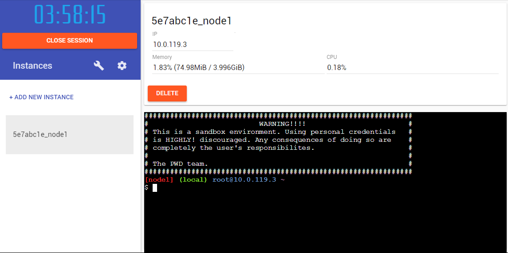

Docker üê≥
Highway to whale
Au menu
- Théoria : Les conteneurs
- Docker : les bases
- Les commandes 'docker'
- Gestion et construction d'images
- Réutilisabilité
- Normalisée
- Unité de déploiement "universel"
- Unité de packaging
- Environnement isolé
- Unité de transport intermodal
Les conteneurs
Usages Dans l'IT
- Isolation de processus / ressources ("virtualisation")
- Portabilité
- Ouverture au Cloud
- Déploiement rapide
- Normalisation (OCI)
Historique Dans l'IT
- Unix chroot (1980) (change root)
- LXC (2008) (Linux containers)
- Docker (2013) Emergence of industry standards for containers :
- OCI (2015) (Open Container Initiatve)
- runc (2015) (still not reached 1.0.0)
- containerd (2015)
Les conteneurs ne sont pas...
Des machines virtuelles
De la magie
Un bug de la matrice
Virtual Machines Vs Containers

- $ docker swarm : gestion de clusters
- $ docker-compose : gestion de services (multi-containers)
- docker hub : registry centralisé de stockage d'images
- $ docker (cli : command line interface) => appels rest à l'engine
- images et containers
- $ dockerd (engine)
- Manipulation de containers LXC
- écrit en Go
Docker
Docker engine
- les cgroups Linux (control groups : gestion de ressources mémoire/cpu/disque)
- les namespaces Linux (environments isolés: PID, network itf, filesystem mnt, user and groups),
- le kernel Linux
Docker engine
Un container c'est donc
- un filesystem isolé "/"
- des users isolés (root, users unix...)
- des process isolés
- des réseaux isolés
Aussi proche que possible d'une installation linux standard mais qui s'exécute sur le kernel hôte
Containers et images
- Les images sont nommées (tag)
- Les containers sont instanciés à partir d'images
- Un
Dockerfiledécrit la construction d'une image - Une image s'appuie sur une image parente
- Les images sont découpées en 'layers'
- Les images sont l'unité de base de docker
Containers et images
- Un container exécute un
processet s'arrête avec lui - Les containers sont
writable - Les images sont
read-only
Containers et images

Containers et images

Containers et images
Taille du container sur le disque
Taille de l'image (virtual size)
Stockage dans /var/lib/docker/image et /var/lib/docker/containers
$ docker
- Communique avec l'engine en HTTP/REST via sockets unix /var/run/docker.sock ou en TCP
- Client en ligne de commande
$ docker
| Commande | ça fait quoi? |
|---|---|
| docker image build | Construit une image à partir d'un Dockerfile |
| docker container create IMAGE | Instancie un container à partir d'une image |
| docker container start / docker container stop | Démarre/Arrète un container |
| docker container run IMAGE | Instancie un container à partir d'une image, et le démarre |
$ docker
| Commande | ça fait quoi? |
|---|---|
| docker container logs CONTAINER | Affiche les logs d'un container (stdout+stderr) |
| docker container exec CONTAINER CMD | Exécute une commande dans un container existant |
| docker container diff CONTAINER | Affiche les modifications du filesystem du container |
| docker container update [OPTIONS] CONTAINER | Modifie les options d'un container existant (mem/cpu/restart...) |
$ docker
Commandes de management
| Commande | ça fait quoi? |
|---|---|
| docker image ls | Liste les images disponibles |
| docker container ls [-a] | Liste les containers running (-a : tous les containers) |
| docker container rm CONTAINER | Supprime un container |
| docker image rm IMAGE | Supprime une image |
$ docker
Commandes de management
| Commande | ça fait quoi? |
|---|---|
| docker image pull IMAGE | Télécharge une image depuis un registry |
| docker image push IMAGE | Envoie une image dans un registry |
$ docker
Commandes de monitoring
| Commande | ça fait quoi? |
|---|---|
| docker [container|image] inspect [ID] | Affiche les infos d'une image ou d'un container |
| docker image history [IMG] | Affiche les layers d'une image |
| docker events | Affiche les events (création/suppressions...) |
| docker stats [CONTAINER] | Affiche les stats d'un container |
Premiers secours : --help
- ...
- docker container exec --help
- docker image build --help
- docker container run --help
- docker container create --help
- docker --help
Run
Démarre un container : RUN = CREATE + START
docker container run [OPTIONS] IMAGE [COMMAND] [ARG...]
# Nommer un container
$ docker container run --name monServer nginx # Nomme le container
# Exécute un nouveau container et y attache le terminal
$ docker container run -it ubuntu
# Lancer un container en arrière plan (detached)
$ docker container run -d nginx
Run
# Expose les ports d'un container en automatique (ports aléatoires)
$ docker container run -P nginx
# Exposer un port particulier vers un port de l'hôte
$ docker container run -p 9876:80 nginx
$ docker container run -p 7894:80 -p 1234:443 nginx
# Monte un fichier ou répertoire local dans le container (volume)
$ docker container run -v test.conf:/etc/nginx/nginx.conf -p 4561:80 nginx
# Démarre un container et exécute la commande donnée
# (surcharge la commande par défaut)
$ docker container run nginx cat /etc/nginx/nginx.conf
Exec
Exécute un processus dans un container 'running'
docker container exec [OPTIONS] CONTAINER CMD [ARG...]
# Démarre un shell interactif dans un container
$ docker container exec -it nginx bash
# liste les variables d'environnement d'un container
$ docker container exec nginx printenv
# Affiche le contenu d'un fichier dans le container
$ docker container exec nginx cat /etc/nginx/nginx.confConstruction d'images
- hub.docker.com
- $ docker image build
- Dockerfile
Dockerfile
Commandes principales
| Instruction | ça fait quoi? | exemple |
|---|---|---|
| FROM | Image parente | FROM ubuntu |
| RUN | Exécute une commande | RUN apt-get install maven |
| COPY | Copie des fichiers dans l'image | COPY myApp.jar /app |
| CMD | Indique la commande qui sera exécutée par les conteneurs | CMD ["/bin/echo", "hello world"] |
Dockerfile
Commandes principales
| Instruction | ça fait quoi? | exemple |
|---|---|---|
| ENV | Variable d'environnement | ENV MVN_HOME=/app/maven |
| LABEL | Ajoute une méta-donnée à l'image | Label maintainer="julien@codeka.io" |
| EXPOSE | Marque un port à exposer | EXPOSE 8080 |
| VOLUME | Marque un répertoire comme persistant | VOLUME /app/data |
Dockerfile
Commandes principales
| Instruction | ça fait quoi? | exemple |
|---|---|---|
| WORKDIR | Modifie le répertoire courant | WORKDIR /opt |
| HEALTHCHECK | Permet de paramétrer le healthcheck des conteneurs | HEALTHCHECK --interval=5m --timeout=3s CMD curl -f http://localhost/ |
Construction d'images
Exemple de Dockerfile simple:
FROM ubuntu:latest # image parente
ENV MESSAGE="Julien"
CMD echo Hello $MESSAGE # commande à exécuter au lancement d'un container$ docker image build -t codekaio/helloworld .docker image build permet de construire une image.
-t permet de lui donner un tag.
. indique le répertoire de construction.
Construction d'images
$ docker build -t /helloworld .
Sending build context to Docker daemon 2.048kB
Step 1/3 : FROM ubuntu
latest: Pulling from library/ubuntu
d5c6f90da05d: Pull complete
1300883d87d5: Pull complete
c220aa3cfc1b: Pull complete
2e9398f099dc: Pull complete
dc27a084064f: Pull complete
Digest: sha256:34471448724419596ca4e890496d375801de21b0e67b81a77fd6155ce001edad
Status: Downloaded newer image for ubuntu:latest
---> ccc7a11d65b1
Step 2/3 : ENV MESSAGE Julien
---> Running in 41b69f00b536
---> d74968af6efa
Removing intermediate container 41b69f00b536
Step 3/3 : CMD echo Hello $MESSAGE
---> Running in 1f52994bd3f4
---> 8ce84b0a2112
Removing intermediate container 1f52994bd3f4
Successfully built 8ce84b0a2112
Successfully tagged codekaio/helloworld:latest
Listing des images
$ docker image ls
REPOSITORY TAG IMAGE ID CREATED SIZE
codekaio/helloworld latest 8ce84b0a2112 About a minute ago 120 MB
ubuntu latest ccc7a11d65b1 2 weeks ago 120 MBLancement d'un container
$ docker container run codekaio/helloworld
Hello Julien !Images applicatives
FROM node:latest # image parente
RUN mkdir /app # Création du répertoire
COPY . /app # Copie de tout le contexte dans le répertoire
WORKDIR /app # On se positionne dans le répertoire
RUN npm install -P # Installation des dépendances applicatives
CMD ["npm", "run"] # Commande de lancement de l'applicationImages applicatives
.dockerignore
Permet d'indiquer le contexte du build (quels fichiers sont disponible à la copie)
Réduction de la taille de l'image finale
tests/
.idea/
.git/
node_modules/
target/
.editorconfig
.eslintrc
README.mdhub.docker.com
- $ docker push
- $ docker login
- Possiblité de s'inscrire pour push des images
- $ docker pull <image:tag>
- $ docker search mysql
- Dockerfiles/Tags/Github...
- Registry officiel d'images docker
Embarquement immédiat
- nginx
- redis
- busybox
- ubuntu
- alpine
- registry
- mysql
- mongo
- elasticsearch
TP !
Outillage
Créer une instance et obtenir l'accès à un shell :
Mise en bouche
- Vérifier la version de docker disponible
- Récupérer l'image 'hello-world:latest' depuis le docker hub
- Exécuter un container à partir de cette image
$ docker version$ docker pull hello-world:latest$ docker container run hello-world
Mise en bouche (cont'd)

- Supprimer l'image 'hello-world:latest' et le container créé
- Récupérer l'image 'nginx' (serveur http)
- Exécuter un container nginx en exposant le port 80
$ docker ps -a & docker rm <id> & docker rmi hello-world$ docker pull nginx$ docker container run -p 8080:80 nginxMise en bouche (cont'd 2)
- Récupérer un projet spring boot
- Aller dans le répertoire 'complete'
- Récupérer l'image 'maven:alpine'
- Créer un Dockerfile pour exécuter l'application !
$ git clone https://github.com/spring-guides/gs-spring-boot.git$ docker pull maven:alpineFROM maven:alpine
RUN mkdir /app
COPY . /app
WORKDIR /app
RUN mvn install
CMD ["mvn", "spring-boot:run"]Mise en bouche (cont'd 3)
- Créer l'image de notre application
- Exécuter l'application spring boot en exposant le port 8080 sur le 7777 (en mode détaché)
- Aller voir les logs de notre application
$ docker build -t app-spring-boot .$ docker create --name instance -p 7777:8080 app-spring-boot
$ docker container start instance$ docker logs instanceBravo !
Vous avez exécuté votre première application Spring dans un conteneur !
Fin !
Thank you!
Questions?